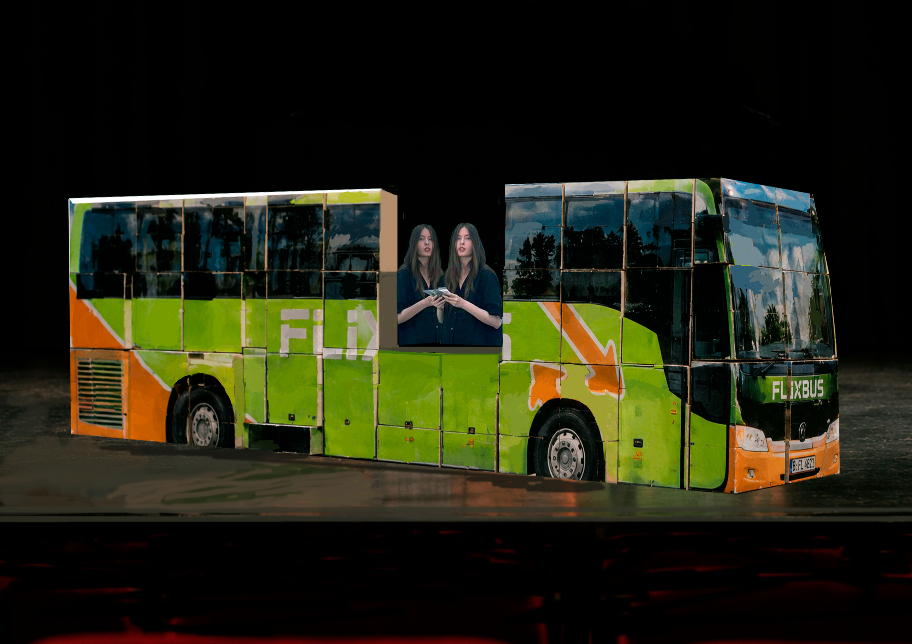
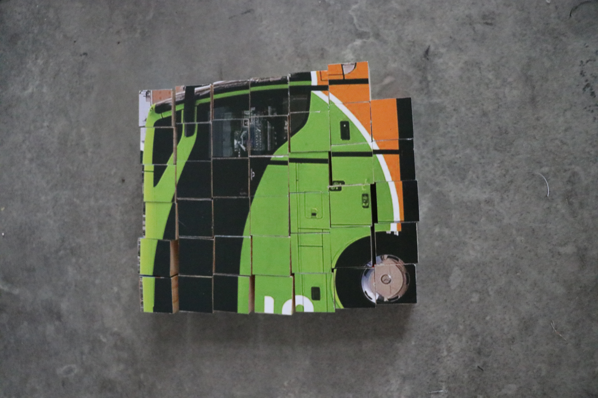
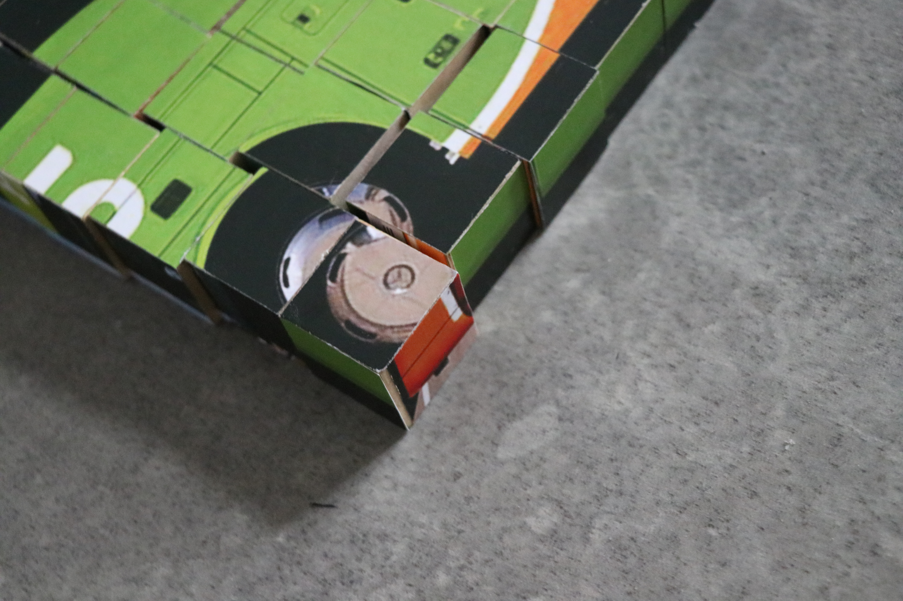

"Человек не должен быть одинок – таково моё мнение. Человек должен отдавать себя людям, даже если его и брать не хотят.", Венедикт Васильевич Ерофеев, Москва — Петушки.
"A human should not be alone – that is my opinion. A human needs to present himself to others, even if those others are not interested in such a gift.", Venedikt Yerofeyev, Moscow — Petushki.
An acted out complaint of 20 minutes in an intense manifestation with my Higher Self.

Boxes depicting fragments of the bus assemble into a construction of approximately three meters in length. Inside, two performers sit near the opening as if it were a window. The inside of the bus is obscured from view during the performance.



The construction derives from a previous work - Cheburashka: It is important how you arrive. The fragmentation and assembly will happen similarly.
Вот он, вот он — конец света
Завтра встанем в неглиже
Встанем-вскочим — света нету
Правды нету! Денег нету!
Ничего святого нету! —
Рейган в Сирии уже.
- Венедикт Васильевич Ерофеев
Here it is, here it is — the end of the world
Tomorrow we’ll get up in our underwear
We’ll get up — jump up — there’s no light
There’s no truth! There’s no money!
There’s nothing sacred left! —
Reagan is already in Syria.
- Venedikt Yerofeyev
Flixbus, route Paris Bercy Seine to Malmö, delayed 70 minutes.
18:18 - somewhere between Antwerp and Eindhoven
Higher Self: Goeieavond, dearest! He had to choose between two industries which, in essence, are not very different, since in both the task is to entertain other people's funding as persuasively as possible. But the cunning god reflected that the profession of beggar does not enjoy as high a regard in public opinion as the profession of artist; that the former is condemned by the police, whereas the latter is even privileged by the laws; that artists now climb to the highest rung on the ladder of honor, while those of the beggar's profession must sometimes ascend a rather less pleasant ladder; that beggars risk both their freedom and their lives, whereas the artist can lose only his cultural capital—or merely that of his friends. And so the most cunning of the gods became an artist; and, to make the matter complete, he even became a Dutchman.
Me: Oh, I recognize you! It is you, my Highest Self? The Me from the bright future?
Higher Self: Let there be no mistake: now, as before - in the fluid and light as much as in the solid and heavy stage of reality - illusion is a fate, not a choice. In the land of the individual freedom of choice the option to escape illusion and to refuse participation in its game is emphatically not on the agenda.
Me: You know what, Higher Me, I feel so down.
Higher Self: The individual's self-containment and self-sufficiency may be an other illusion: that men and women have no one to blame for their frustrations and troubles does not need now to mean, any more than it did in the past, that they can protect themselves against frustration using their own domestic appliances or pull themselves out of trouble, Baron Münchhausen style, by their mary-janes. If they fall ill, it is assumed that this has happened because they were not resolute and industrious enough in following their diet; if they stay unemployed, it is because they failed to learn the skills of gaining an interview, or because they did not try hard enough to find a job or because they are, purely and simply, work-shy; if they are not sure about their career prospects and agonize about their future, it is because they are not good enough at winning friends and influencing people and failed to learn and master, as they should have done, the art of illusion. So, if it is assumed, we can assume it too.
As Sartre famously put it: it is not enough to be born a bourgeois - one must live one's life as a bourgeois. Needing to become what one is is the feature of abundant living - and of this living alone. Modernity replaces the heteronomic determination of social standing with compulsive illusionary self determination.
Me: We can assume? But can we? How can we?
Higher Self: If you don't believe Sartre, then listen to your mother. Her neighbor could have given up her husband to the front line, but she chose to cut her leg off to bring him over the border!
Me: She didn't...did she? She divorced him and hired someone else to marry him.
Higher Self: Well that is in your reality, and still no less impressive. In my reality, she has no leg, but has a husband, a husband with both his legs attached. And in a more abundant reality, she cut her leg off, stored it in a portable mini fridge and got it reattached in Germany in Frankfurter Uni Klinikum.
Me: And how, tell me, is she more abundant in the legless reality than now in her current?
Higher Self: Legless she gained something more significant than just a husband. She became a cause of desire and of all kinds of desires, that, normally, would just bypass her. Without a leg, while the desires in their truth still bypass her, in their illusion they rest upon her, unable to grasp the true real. She is thus a fetish - a destiny quite desirable for an artist like you. In the reality of the highest abundance she doesn't even need a husband, just a saw to saw her leg off.
That would be enough.
Me: And the husband?
Higher Self: The conscripted husband would become himself a fetish, standing in place for the requirements of the other... And if you fulfill these requirements, you'll reach unimaginable abundance, you have already reached this unimaginable abundance from where I speak to you.
You have to start against all odds, start from the fundamentally imaginary, specular origin of your Higher Self. That's what I am trying to make you understand. The husband would then realise that the desire can only be confirmed in this relation through a competition, through an absolute rivalry with the other, in view of the object towards which it is directed. And each time we get close, in a given subject, to this primitive alienation, the most radical aggression arises - the desire for the disappearance of the other, his disillusionment.
This is a key function. Saint Augustine, notes, in a phrase I've often repeated, this all-consuming, uncontrollable jealousy which the small artist feels for his fellow being, say, usually when the latter is clinging to a teaching position, that is to say the object of desire that is to him essential. The relation of the subject to his Urbild, his Idealich, through which he enters into this imaginary function and learns to recognise himself as a form can always leg-saw.
Me: And what am I from where you speak? What is my Idealich? A teacher, a researcher, oh, a professor? A famous artist exhibiting in the Venice Biennale?
Higher Self: Oh, beyond that...In the highest reality of the highest abundance of your Highest Self you reached the highest level of artistic expression, realised your highest potential!
Let me tell you about two destinies, both of which were so geniusly authentic, so driven by love, who reached the infinitude of blessings and carved out their most prosperous reality. There was a lady, who lived in the best district of Offenbach in a spacious villa with her own garden while having been in Germany no longer than 10 years. How could she have achieved that? She spoke no German and had no job! Although she too, had a legless husband, not all can be attributed to such a condition. And I can tell you how. Since the first day, she introduced herself in the following manner: "Some time ago, before I moved to Germany, I had a clothing store. In front of the store was a busy street, with many cars passing by. One day, a young schoolgirl was crossing the street in front of my car, that I parked in front of my shop. A car was speeding and could not stop in time to avoid the impact with the girl. Without hesitation, I jumped in front of the girl and pushed her away. The girl survived and I died, but was revived, by the man who is now my husband."
What can we learn from her?
Me: She is brave?
Higher Self: No!
Me: She loves children?
Higher Self: Of course not!
What we can learn from her is the proper way to communicate your existence so that reality can align itself accordingly. It is called manifestation. Saving the girl was merely a reason to introduce the points of attraction - she had a store, which was in a city with a big street, maybe even a capital, she had a car with her own assigned parking spot and she has a husband who is also a hero, like she herself is one. This is what set her up for success. Without stating these things out loud, she would not have attracted a villa in Wiesbaden!
Another life story to make my point clear. This gentleman, who does not have a villa and lives rather in the worst part of Offenbach, nevertheless achieved a genuine level of fulfilment, perhaps somewhat in what you could call a Buddhist manner, by shedding all attachment. So what, he lived in Moscow? He was not happy! He followed his dream and came to Germany to become German, or maybe to just not be Russian, or maybe to leave the Soviet behind, or maybe even as simply as to become wealthy. Of course German he did not become, neither those other things, but he embraced his position as a hardworking newcomer. When asked why he did not want to move to Frankfurt - a bigger, richer city, he confidently replied he felt in Offenbach like a fish in the sea. He also regularly smelled his floors to determine when to clean them.
Me: So the things I want to be I should say out loud?
Higher Self: The things you want to be and the things that you are, because otherwise you will never be them. Perhaps, you will not even be, you will disappear! Like the misunderstood geniuses, exiled heroes, undiscovered talents and impoverished heirs. To experience recognition you need to be clearly what you are and you need to say it with great volume.
Me: So what am I, from here, from where you are, from the highest vantage point?
Higher Self: You know it by looking at others, by seeing what you are not, by experiencing your separation to achieve the ultimate unity. To say simply - if you are third Vienna, know the first one and the second, if it is not too provincial - if you are first Vienna, behave accordingly. Realize your special path, live it and let it be lived, or face generational trauma.
Me: What trauma?
Highest self: All kinds. Possibilities ad infinitum. The trick is while looking at others, to see nevertheless what you can be yourself, or are. You look at others, but notice your own potential. Or you look within yourself, notice a potential and make sure it is reflected in others, and if it is not, you help them reflect it, and if they do not want to be helped, then they are removed from their own higher selves.
Say there is a lady and in herself she glimpsed a potential to be a good wife, next to her already established potential of a good mother to a teenage daughter. She is husbandless, because for whatever reason - maybe he died, maybe he was violent, maybe he had no job. And so she met a man, calm and measured and saw herself to be his wife and him being the stepdad to her daughter, and she saw happiness, and a small white dog, and a shared house, although not yet clear who would buy it and how the shares would be divided. She saw all this and he endorsed it, taking off his cap, revealing he was bald, fully. Would such a predicament be of any importance, if you already envisioned all the possibilities ready to bloom? Normally it would't, but in this case it would spiral and penetrate the destiny of her daughter.
So after years of dating they married. The relationship with her daughter soured, because the man did not quite get along with her. She was a teen and rebellious, he had his own several children, a bit younger, that he had to spend his full care on. He also could not bring much money to the table, as he had to pay most of his earn to the mother of his children.
Needless to say they divorced, sold the house, divided the shares, most probably unfairly and moved on. But the tragedy did not end here. The daughter, now a young adult and freshly graduated, saw her own potential as a wife, a future mother and married her young sweetheart, who took his hoodie off and uncovered a bald head. Guess what happened to them?
Me: They divorced.
Higher Self: They divorced! Probably did not manage to buy a house, judging from the current trend, and for the better. How did the lady sabotage her daughter's marriage?
She underestimated her own true potential! She was so close in seeing it clearly and truly, and yet missed the detail of a hairy head. She remarried and remained married, even through covid, with her new husband who is far from bald and has his own house. The daughter sells insurances.
Me: So every detail counts?
Higher Self: Absolutely every, especially when it concerns the reflection of you in others. How they see you, how they talk about you, how they oppose you. If hell is other people, then heaven is also other people, but friendly people, abundant people.
Me: Not the lack of people, or being solitary, a loner to preserve inner peace?
Higher Self: Not at all! Huizinga said in this regard: Cultuur vereist in de eerste plaats een zeker evenwicht van innerlijke vrede. As you know, a plus b equals b plus a, so we can say confidently - the inner peace is the product of culture, a product of cultured others or of the act of culturing others, even if they already are cultured, (exasperated) one can never be too cultured, too peaceful. You need others for inner peace! If you are alone, there is no one to be peaceful with innerly.
Me: Maybe with yourself?
Higher Self: With yourself, you are already peaceful. We are friends! Imagine, two wonderful people open a pet store, a very cultured pet store. Let's call it Happy Pets. It has all the best for all kinds of animals with a specific focus on dogs, smaller, and middle-range breeds. Dry food Royal Canine, wet food Royal Canine, low potassium full grain wild meat patés; dry bull dicks fresh from the butcher instead of those Leckerlies from Peddigree. Go even further! Raincoats and overalls ordered straight from Rimini (and Rimini is next to Milan!), natural inner linings and outer fabrics embellished with Swarovski crystals. Leashes with ornaments and more Swarovski. Dog boots in different sizes, bio hay for rabbits and hamsters.
Imagine this heaven on earth, but without others. No one there to peruse the catalogues, no one there to request a little tester baggy of Royal Canine Renal. No one there to pick up those bull dicks or the no-cry maltese shampoo. The doors stay closed because no one opens them; the others do not come in, even those others with poodles. Now tell me, is it peace? Can there be any inner peace when there is no one to share this heaven with? Of course there is not - first, the dicks go bad, then the wet food, then the landlord asks for rent, which you cannot pay. Then others start to become wary of your store because no one ever comes in. Of course you could blame the others; you could say the Germans are not used to splurging, the Turks do not have dogs, the French prefer their own raincoats, the Italians are intimidated by the dry dicks. But it is not about who is at fault!
If you start thinking who is at fault here, you might temporarily reach some kind of inner peace, but you still need the others even for this reasoning. If there are no others, no one buys your food. If there are no others, you can only blame yourself. If there are no others, say no landlord, then there is no one to end this vicious cycle and file a lawsuit. The hell would go on.
Here to mind comes the man who united Europe and Asia, no, not Marx. Joseph Beuys. To quote: But first you have to ask yourself whether your Happy Pets is productive for the whole. Is critique the only method to find a solution for the questions we all have in society? If you only criticize. . .Also, let's not forget, you can only criticize the known, the named, the official. Now, your Advanced Self would ask...
Me: Mmmmm?
Higher Self: ...how can we criticize the anonymous?
Me: Mmmmm?
Higher Self: We criticize it through the divine! And sometimes we even criticize the divine through the divine. Listen carefully. You are a Buddhist craftsman. Your brother is also a Buddhist, a craftsman hired by your local temple to make a statue of Buddha. Your brother is a good guy, he knows you are jobless and you have less talent, and he recommends the temple to hire you as part of the artist team. You have one job, the easiest one, the finishing touches. You open Buddha's eyes, you paint his eyelids or dot his pupils. That's it; he even premeasured where to paint. You are already dissatisfied with life, but you agree. Your brother is not at fault for your clumsy hands. Who is at fault here? The randomness, the destiny, maybe Buddha himself?
But how can you blame Buddha? Buddha is the whole reason you got this job. So you paint his eyes, and you paint one eye crooked. And now you can finally get back at him! You can say Buddha looks funny, he is tired, his mascara melted. You hear others say similar things about Buddha. Of course they also add that you are a talentless idiot, but they say it all the time anyway, so who cares? At least your eyes are not crooked.
Say, where do you go?
Me: Can you not see it? Are you not all-knowing?
Higher Self: My reality is so high that most of Europe is blurry from where I am.
Me: To Arnhem, to my sweetheart.
Higher Self: Say, why do you go to him? How does he bring you to the reality you want? And why do you have to travel? Are you not already together, united in the now and in the forever?
Me: He studies there. We had to live apart. But where he lives it is although not pretty, but green and although not much to do but much to feel when we are together, body to body. There might as well be a future for me, somewhere, if not in Arnhem then in another city. He once said “Stay” and I said, “Yes”; He wants me to sleep in his arms and I’ll smell him; I’d like his chest because it’s brown and narrow, and there’s no hair on it, exactly like I like.
Higher Self: It is truly heaven on earth? (Asking as if testing)
Me: Not quite. And the place is too small, and the work does not quite work yet. And when the great man realizes his insignificance - It is a tragedy. And when the small man realizes his insignificance - It is a tragedy. And when the small man realizes his significance - It is delusion. And when a great man realizes his significance - It is ....(interrupted by someone shouting). The clock shows:
19:19 - somewhere between Eindhoven and Arnhem
Loud commotion in the bus. Screams from downstairs, where the toilet is. The bus stops abruptly. I turn my head to see what happened but my Higher Self blocks my view.
Someone shouting: There are weapons in the toilet! Someone is transporting enough to blow up the road!
I try to look behind my Higher Self by turning my head and twisting my neck. My Higher Self moves to block my view and keeps looking straight into my eyes. Realization starts dawning on me and I whisper.
Me: Those are yours. You put them there. What were you trying to do? Why did you do it? (Angry whispering)
The Higher Self took out a potato masher or a meat beater and smashed me in my head. I never gained awareness again.